<div>

        <mat-toolbar color="primary">

                <button mat-icon-button (click)="sidenav.toggle()">
                        
                </button>
                <h2 (click)="sidenav.toggle()">CircuitBreakers</h2>
        </mat-toolbar>
</div>
<mat-sidenav-container class="sidenav-container" autosize>
        <mat-sidenav mode="top" class="nav" opened="{{opened}}">
                <mat-nav-list>
                        <a mat-list-item routerLink="/" (click)="sidenav.toggle()" routerLinkActive="active"
                                [routerLinkActiveOptions]="{ exact: true }">
                                
                        </a>
                        <div *ngIf="login">
                                <a mat-list-item routerLink="/createProcess" (click)="sidenav.toggle()"
                                        routerLinkActive="active" [routerLinkActiveOptions]="{ exact: true }">Start een
                                        proces</a>
                                <a mat-list-item routerLink="/afsluiten" (click)="sidenav.toggle()"
                                        routerLinkActive="active" [routerLinkActiveOptions]="{ exact: true }">Sluit een
                                        proces
                                        af</a>
                                <a mat-list-item routerLink="/dashboard" (click)="sidenav.toggle()"
                                        routerLinkActive="active" [routerLinkActiveOptions]="{ exact: true }">Dashboard
                                        1</a>
                                <a mat-list-item [matMenuTriggerFor]="vini">
                                        Vinfi
                                        <mat-icon>expand_more</mat-icon>
                                </a>
                                <mat-menu #vini="matMenu">
                                        <button (click)="sidenav.toggle()" mat-menu-item routerLink="/actief"
                                                routerLinkActive="active"
                                                [routerLinkActiveOptions]="{ exact: true }">Actieve
                                                vinificaties</button>
                                        <button (click)="sidenav.toggle()" mat-menu-item routerLink="/nonactief"
                                                routerLinkActive="active"
                                                [routerLinkActiveOptions]="{ exact: true }">Voltooide
                                                vinificaties</button>
                                </mat-menu>

                                <a mat-list-item [matMenuTriggerFor]="menu">
                                        Data toevoegen aan een proces
                                        <mat-icon>expand_more</mat-icon>
                                </a>
                                <mat-menu #menu="matMenu">
                                        <button (click)="sidenav.toggle()" mat-menu-item routerLink="/addMeting"
                                                routerLinkActive="active"
                                                [routerLinkActiveOptions]="{ exact: true }">Voeg een meting
                                                toe aan een proces</button>
                                        <button mat-menu-item routerLink="/addActie" routerLinkActive="active"
                                                [routerLinkActiveOptions]="{ exact: true }"
                                                (click)="sidenav.toggle()">Voeg een event
                                                toe aan een proces</button>
                                </mat-menu>

                                <a mat-list-item [matMenuTriggerFor]="alarm">
                                        Alarmering aanpassen
                                        <mat-icon>expand_more</mat-icon>
                                </a>
                                <mat-menu #alarm="matMenu">
                                        <button mat-menu-item routerLink="/alarmdata" (click)="sidenav.toggle()"
                                                routerLinkActive="active"
                                                [routerLinkActiveOptions]="{ exact: true }">Verander de
                                                alarmeringswaarden</button>
                                        <button mat-menu-item routerLink="/alarmpersonen" (click)="sidenav.toggle()"
                                                routerLinkActive="active"
                                                [routerLinkActiveOptions]="{ exact: true }">Manage de
                                                alarmeringspersonen</button>
                                </mat-menu>
                                <div *ngIf="admin">
                                        <a mat-list-item [matMenuTriggerFor]="admin">
                                                Admin Data
                                                <mat-icon>expand_more</mat-icon>
                                        </a>
                                        <mat-menu #admin="matMenu">
                                                <button mat-menu-item routerLink="/adminToevoegen"
                                                        (click)="sidenav.toggle()" routerLinkActive="active"
                                                        [routerLinkActiveOptions]="{ exact: true }">Data
                                                        toevoegen</button>
                                                <button mat-menu-item routerLink="/adminEdit" (click)="sidenav.toggle()"
                                                        routerLinkActive="active"
                                                        [routerLinkActiveOptions]="{ exact: true }">Data
                                                        beheren</button>
                                        </mat-menu>
                                </div>
                                <a mat-list-item routerLinkActive="active" (click)="sidenav.toggle()" (click)="logOut()"
                                        [routerLinkActiveOptions]="{ exact: true }">Logout</a>
                        </div>
                        <div *ngIf="!login">
                                <a mat-list-item routerLink="/login" (click)="sidenav.toggle()"
                                        routerLinkActive="active" [routerLinkActiveOptions]="{ exact: true }">Login</a>
                        </div>
                </mat-nav-list>
        </mat-sidenav>
        <mat-sidenav-content class="content">
                <router-outlet></router-outlet>
        </mat-sidenav-content>
</mat-sidenav-container>